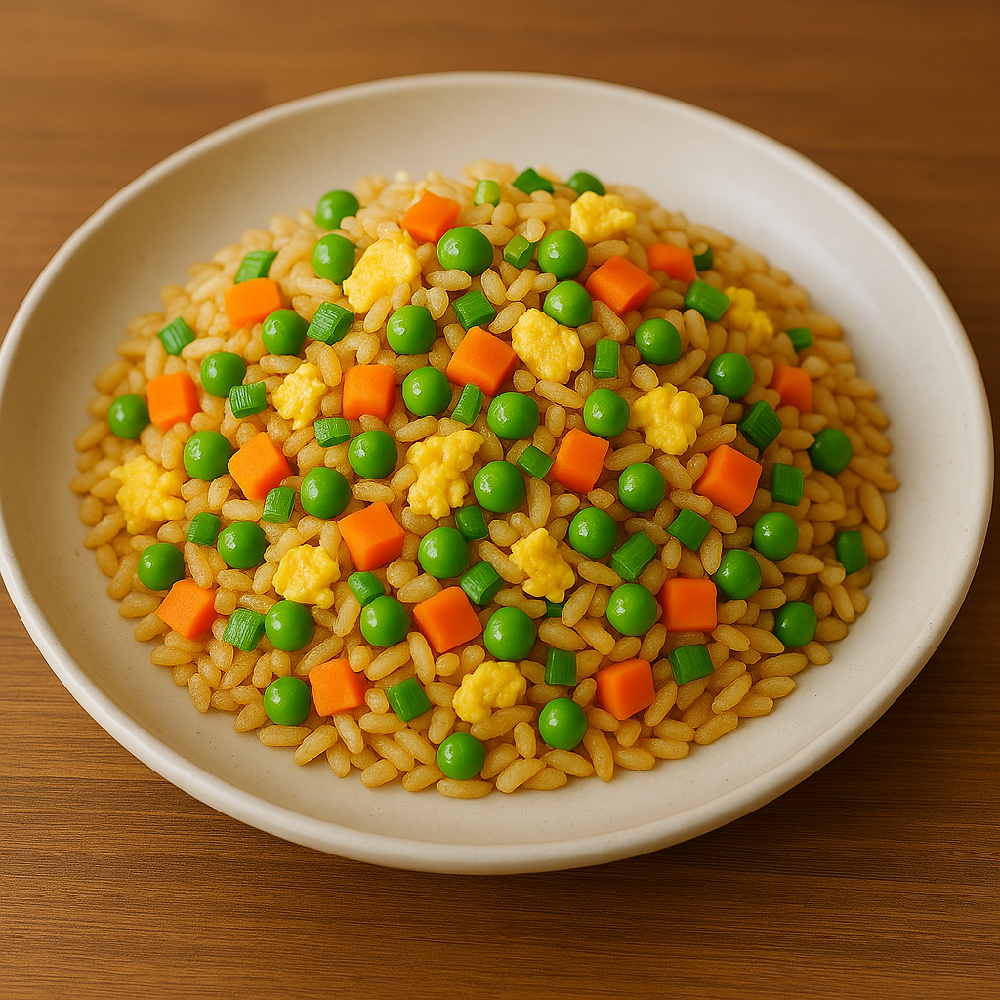

Easy Fried Rice

Description
This classic fried rice recipe is a quick, delicious, and customizable dish perfect for busy weeknights or using up leftover rice and veggies. Featuring fluffy rice stir-fried with savory soy sauce, crisp vegetables, and your choice of protein, it comes together in under 30 minutes and is packed with umami flavor in every bite. Whether served as a main course or a satisfying side, this fried rice is sure to become a go-to favorite in your kitchen.
Ingredients (Serves 2-3)
- 2 cups cooked rice (preferably cold, day-old rice)
- 2 large eggs
- 2 tables of vegetable oil (or any other neutral oil)
- 2-3 cloves of garlic, minced
- 1/4 cup chopped green onions (optional)
- 1/2 cup mixed vegetables (e.g., peas, carrots, corn)
- 2 tablespoons soy sauce (adjust to taste)
- 1 teaspoon sesame oil (optional, for flavor)
- Salt and pepper to taste
Steps
- If not already done, cook the rice and let it cool completely. Cold rice works best to avoid clumping. Chop vegetables and crack the eggs into a small bowl, beating them lightly.
- Heat 1 tablespoon of oil in a large wok or skillet over medium-high heat.
- Pour in the beaten eggs. Stir and cook until just set, then remove from the pan and set aside.
- Add the remaining oil to the pan. Stir-fry the garlic for about 30 seconds until fragrant. Add the mixed vegetables and cook for 2–3 minutes until heated through and slightly tender.
- Add the cold rice to the pan. Break up any clumps with your spatula and stir-fry everything together for 2–3 minutes until evenly combined and heated.
- Drizzle in the soy sauce and sesame oil (if using). Stir to coat the rice evenly. Add salt and pepper to taste.
- Return the scrambled eggs to the pan and toss in chopped green onions. Mix well and cook for another minute to combine all flavors.
- Serve hot as a main dish or side. Enjoy!
Homepage